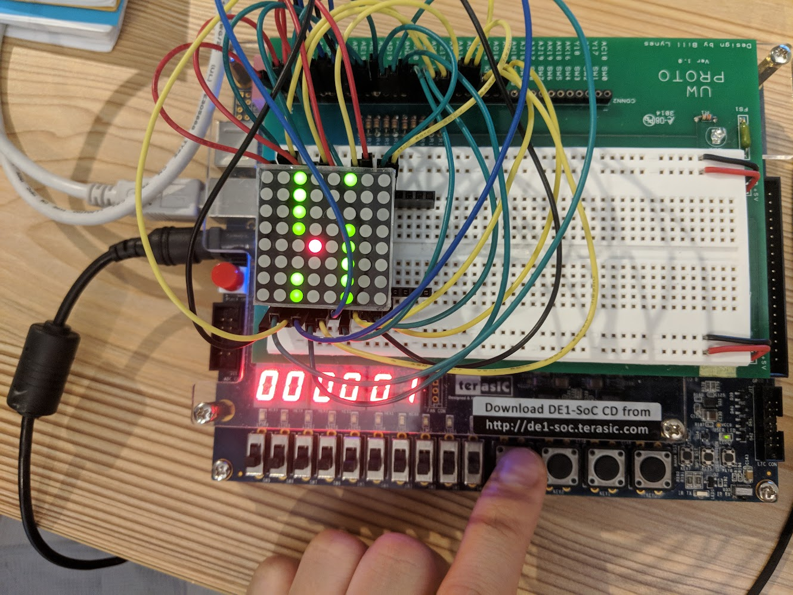

Flappy Bird Game on FPGA Development Board
University of Washington, Seattle
06/2019 - 08/2019
Keywords: System Design | Finite State Machine | Peripheral Integration | SystemVerilog | Intel Cyclone V DE1-SoC FPGA Development Board | Intel Altera Quartus | ModelSim

Role
Impacts
Skills
Descriptions
I designed a classical arcade game - flappy bird on a FPGA development board using SystemVerilog. I started by designing a high level block diagram and I broke the program down into a module per block, each responsible for a functionality. I then determined the logics for the mechanisms using Finite state machines. After all the preparation were done, codes were written and peripherals were integrated to the systems. Lastly, I validated the systems with timing constraints and checked the data syncing with system clocks on ModelSim.